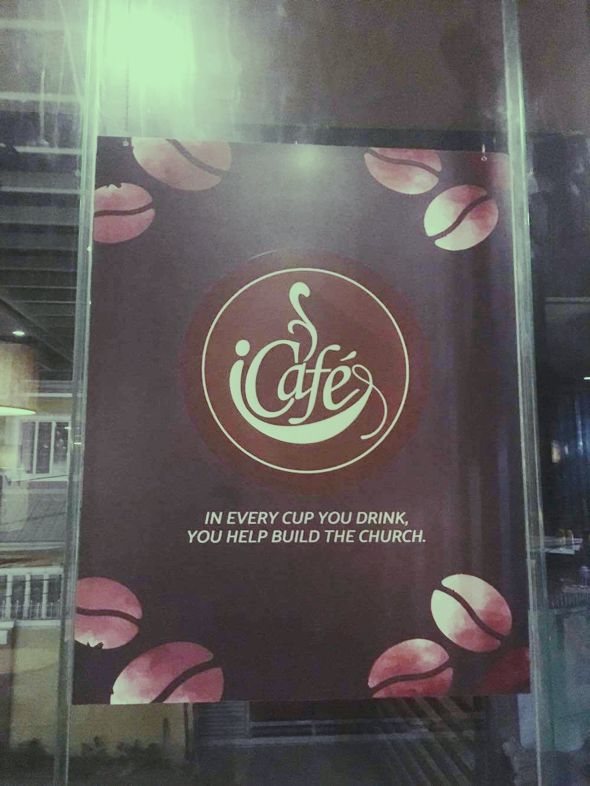
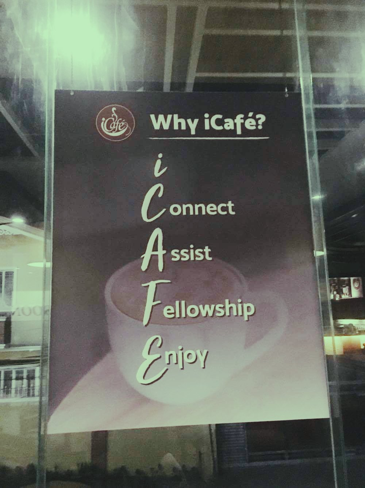

|  |  |
iCafe is a Coffee Shop located at Marilag Subd. Dasmarinas, Cavite. It is built inside Church Of God- Dasmarinas and it was built to help
the construction of the church. In the picture says, "in every cup you drink, you help build the church" because all the money from
the coffee shop, aside for the salary of the workers their, will go straightly to the budget of the construction of the church.
So in every food or drink you will buy here, you contribute to the development of every facilities in the church, too.
The coffee shop was named "iCafe" because it means I Connect, Assist, Fellowship and Enjoy. This shop was planned by the leaders of the church also to gather
more souls to Christ. In this location that is inside the church, the buyers will be easy to be encouraged to attend church.
It is also timely for the millenials because they are fond of coffee shop as their place to spend their leisure time even their time to review
for academic purposes. This place is comfortable and really appropriate for dates, bondings and party!